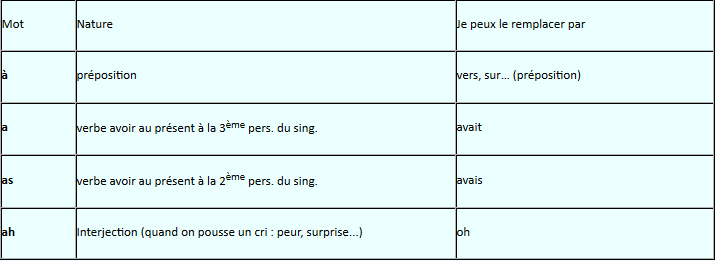
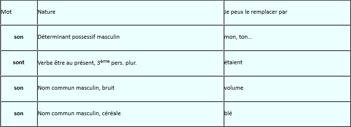
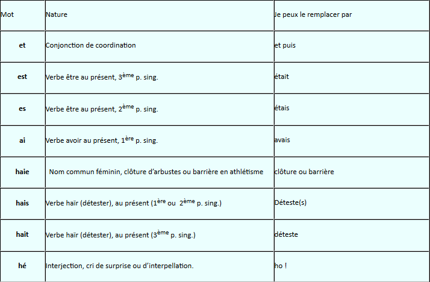
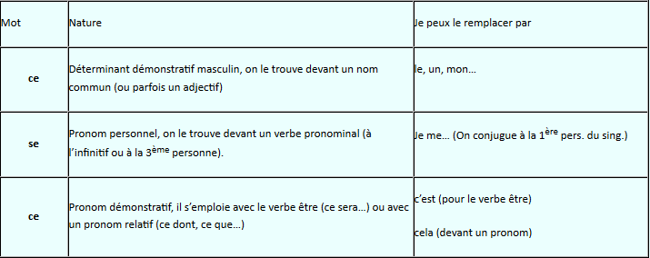
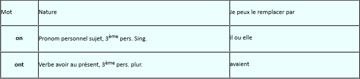
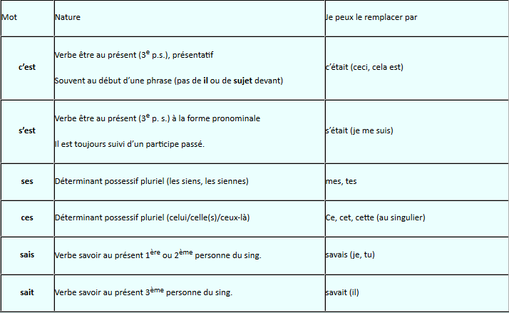
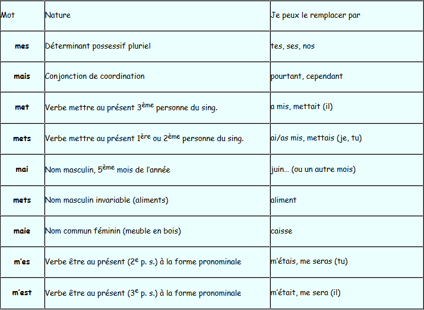

MACLASSE.COM

Les homophones grammaticaux : à, a, as, ah
il part à six heures demain matin. | Il part vers six heures demain matin
Samuel a perdu la partie. | Samuel avait perdu la partie
Tu as beaucoup de chance. | Tu avais beaucoup de chance.
Ah! que cela est beau! | Oh!Que cela est beau!
Exercices : choisir entre a ou à :
Choisir entre a, as, à, ah ou ha :
Les homophones grammaticaux : son, sont
il a mangé son goûter. | Il a mangé mon goûter.
Les résultats sont excellents. | Les résultats étaient excellents
La musique est trop forte, baissez le son. | La musique est trop forte, baissez le volume.
J'adore le pain au son | J'adore le pain au blé.
Les homophones grammaticaux : et ou est
Pierre calcule vite et bien. | Pierre calcule vite et puis bien.
Fatima est très grande. | Fatima était très grande
Tu es arrivé le premier. | tu étais arrivé le premier.
J'ai tout compris! | J' avais tout compris!
Le jardinier taille la haie. | Le jardinier taille la clôture.
Tu hais les mathématiques. | Tu détestes les mathématiques
Hé! Que fais-tu ici? | Ho! Que fais-tu ici?
Exercices et ou est :
Exercices est, es, ai ou et :
Exercices est, es, ai et ou haie :
Les homophones grammaticaux :ce ou se
Il aime beaucoup ce jeu. | Il aime beaucoup mon jeu.
Pierre se trompe. | Je me trompe.
Ce fut une belle rencontre. | C'est une belle rencontre.
C'est ce que je veux. | C'est cela que je veux.
Les homophones grammaticaux : on ou ont
Ce soir, on va au cirque. | Ce soir, il va au cirque.
Les enfants ont réussi leur exercice. | Les enfants avaient réussi leur exercice.
Les homophones grammaticaux : ses ces c'est s'est :
C'est très intéressant. | Ceci est très intéressant.
Pierre s'est fait mal en tombant. | Pierre s'était fait mal en tombant.
Il cherche ses chaussures. | Il cherche mes chaussures. (les siennes)
Ces enfants semblent perdus. | "cet" enfants semblent perdus.(ceux-là)
Sais- tu tes tables de multiplication? | Savais--tu tes tables de multiplications?
Boris sait où ils sont partis. | Boris savait où ils sont partis
Exercices ses/ces :
Exercices s'est / c'est / ses / ces :
Exercices c'est / ces / s'est / ses / sais / sait :
Les homophones grammaticaux : mais, mes :
Mes chaussures sont usées. | Tes chaussures sont usées.
Il fait froid mais je suis bien couvert. | Il fait froid cependant je suis bien couvert.
Il mets son pull à l'envers. | Il a mis son pull à l'envers
Je pars en vacances en mai | Je pars en vacances en juin.
Je mets le couvert | J'ai misle couvert.
C’est un mets exquis. | C’est un aliment exquis.
J’ai acheté une vielle maie en chêne. | J’ai acheté une vielle caisse en chêne.
Tu m'es très sympathique. | Tu m'étais très sympathique.
Il m'est rentré dedans. | Il m'était rentré dedans.
Exercices mais ou mes :
Exercices mes, mais, met ou mets :
Exercices mes, mais, met, mets, m'est, m'es, mai ou maie :
Les homophones grammaticaux : ou, où :
Les homophones grammaticaux : la, l'a :
Les homophones grammaticaux : on, on n' :
Les homophones grammaticaux : sans, s'en :
Les homophones grammaticaux : Quel(s), quelle(s), qu'elle(s) :
Les homophones grammaticaux : d'on, dont, donc :
Les homophones grammaticaux : leur, leurs :
Il ne faut pas confondre l’infinitif en –er (invariable) et le participe passé en –é (ou –ée, –és, –ées).
Un verbe à l’infinitif peut toujours être remplacé par un autre verbe à l’infinitif.
Remplacer un verbe du 1er groupe à l’infinitif par un autre verbe du 2ème ou du 3ème groupe à l’infinitif permet « d’entendre » la terminaison.
Exemple : Elle voulait rentrer. Elle voulait partir
On trouve un infinitif derrière une préposition (à, de, pour, par…)
Exemple :La pluie s’est mise à tomber. Il joue pour gagner.
Le participe passé s’emploie avec les auxiliaires avoir ou être. Il est aussi utilisé seul, comme un adjectif qualificatif.
Remplacer un verbe d’un participe passé du 1er groupe par un autre participe passé du 2ème ou du 3ème groupe permet « d’entendre » la terminaison.
Exemple :Il répare la chaise cassée. Il répare la chaise détruite.
On trouve un participe passé dans les temps composé comme le passé composé. On trouve alors l’auxiliaire avoir ou être devant le participe passé.
Exemple :Elle a gagné son match. Nous sommes rentrés tôt.
Exercices -er ou -é :
Exercices -er; é(es) ou -ez :
Exercices -é, -ée, -ées, -er, -ait, -ais, -aient :


Mentions légales / Qui sommes-nous ? / Plan du site
Nos matières : français - mathématiques - histoire - sciences - arts visuels